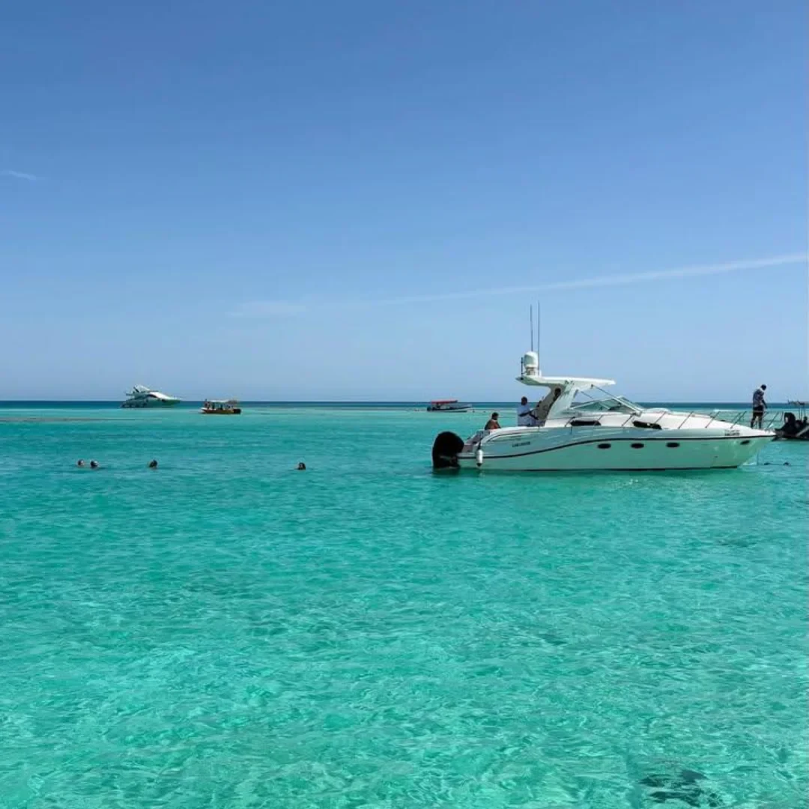

تأجير اليخوت والقوارب
خيارات تُناقش وفق عدد الضيوف والمدة وطبيعة الرحلة.

جدة، أبحر الشمالية
يخوت وقوارب ورحلات بحرية في جدة. خطط لجولة، رحلة جزر، أو مناسبة خاصة على الماء.
اختر كيف تحب قضاء يومك في البحر، ثم شارك الفريق عدد الضيوف والتاريخ والمدة. تُراجع تفاصيل اليخت والوجهة والتجهيز قبل تأكيد أي حجز.
خيارات تُناقش وفق عدد الضيوف والمدة وطبيعة الرحلة.
استفسر عن رحلات بياضة وأبو طير والوجهات المتاحة في تاريخك.
تجهيز مناسبات خاصة ورحلات صيد، وفق الترتيبات المتاحة مع الفريق.
نماذج مختارة من صور النشاط المنشورة. افتح الصورة لمشاهدة التفاصيل.
6 صور في المعرض
شارك التاريخ وعدد الضيوف وطبيعة الرحلة. يؤكد الفريق اليخت والوجهة والتوفر قبل الحجز.
اختر الخدمة وأضف التفاصيل التي تساعد الفريق على فهم طلبك. ستظهر لك رسالة جاهزة للمراجعة قبل فتح واتساب.
جدة، أبحر الشمالية
رابط الموقع، الحسابات، والباركود الخاص به.
فتح بطاقة التواصل